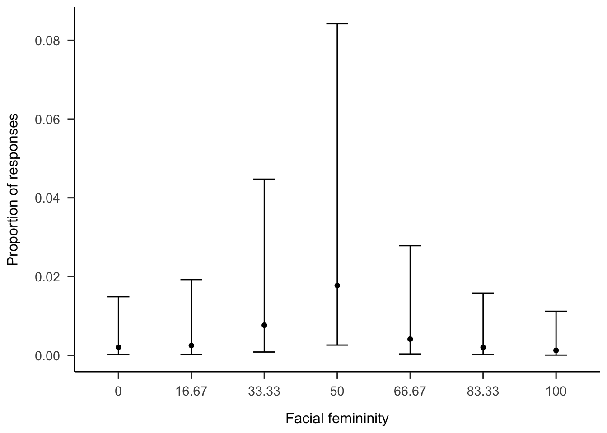

I haven’t changed this in a while Gender categorization - the process through which gender categories are applied to others - is studied almost exclusively by asking participants to respond in terms of woman and men only. This does not capture the diversity of gender which is a problem because it may be inaccurate and it may be harmful to gender diverse individuals. This study (N = ) investigated how more inclusive response options affected gender categorization in terms of options chosen and categorical perception. Participants were more likely to categorize gender beyond the binary when provided with explicit response options, such as “non-binary” and “I don’t know”. Additional responses did not affect categorical perception. The study highlights the importance of careful consideration of response options in gender categorization research.
# Seed for random number generationset.seed(42)knitr::opts_chunk$set(cache.extra = knitr::rand_seed)
Surveys and interviews of transgender and gender diverse (TGD) individuals suggest that many people experience gender as fluid, diffuse, and not bounded by the typical western binary of women and men Hyde et al. (2018). In addition, TGD individuals experience invisibility due to the assumption that there are only two genders and that gender should be visible from someone’s face (Ansara and Hegarty 2014). It is important that research takes this lived reality into account when designing measures of gender categorization to avoid perpetuating such marginalization and invisibility.
One of the earliest examples of an inclusive attempt to measure gender was the Bem Sex-Role Inventory (BSRI). The BSRI measured gender as a psychological trait and challenged the dichotomous and binary conceptualizations of gender by treating femininity and masculinity as separate constructs (Bem 1974). When gender was measured with the BSRI, most people exhibited a mixture of feminine and masculine traits (Bem 1974). The BSRI, despite its innovation, did not offer participants the opportunity to identify with genders beyond the traditional binary categories of women and men.
More recently, a number of recommendations have been put forward to help researchers measure participants gender identity without excluding TGD people. For example, Saperstein and Westbrook (2021) suggested including a range of categories in addition to “woman” and “man”. In addition, Lindqvist, Sendén, and Renström (2020) suggested including an open text entry where participants can fill in whatever they want. While this practice is not yet the standard, it is increasingly common among researchers to adopt these open-ended approaches to measure participant gender (e.g. Carleton et al. 2022; Cronin et al. 2022; D’Agostino et al. 2022; Göttgens et al. 2022)
However, it is important to note that the majority of recommendations primarily focus on research that measures participants’ self-identified gender identity. This emphasis is understandable as gender identity is a commonly reported demographic variable. Still, self-identified gender identity is only one of many ways that gender can be a target of research. Another common avenue of research on gender is as a social outcome, specifically how people perceive and categorize the gender of others.
A brief survey of the research on how people perceive and categorize the gender of others still almost exclusively treats gender as a binary category. Researchers in this field have explored the speed and automaticity of gender perception in faces, as well as which facial features are associated with specific gender categories, such as women and men (e.g. Mogilski and Welling 2018). Generally, the findings have been used to argue that people categorize gender rapidly and automatically (Habibi and Khurana 2012; Jung, White, and Powanda 2019), with facial features such as skin smoothness, jawline, and hair length used to determine gender identity. Lastly, studies in this field have indicated that people perceive faces categorically (Campanella, Chrysochoos, and Bruyer 2001). In other words, that faces, even when manipulated to vary on a continuum from feminine to masculine were still perceived as belonging to the categories women or man. However, these studies typically do reflect the diverse nature of gender or consider alternative response options.
Instead, gender categorization is most often measured through a forced-choice task in which participants are forced to indicate either “female” or “male” when presented with a face (see for example Campanella, Chrysochoos, and Bruyer 2001; Cloutier, Mason, and Macrae 2005; Webster et al. 2004; Zhao and Bentin 2008). A slightly different approach asks participants to rate faces on a gender gradation as a quality, often using “feminine” and “masculine” as endpoints on a single gradation (D’Ascenzo, Tommasi, and Laeng 2014). Only in some rare cases are masculinity and femininity measured using different gradations for femininity and masculinity (e.g. Wittlin et al. 2018).
There are several reasons why researchers may want to expand their research beyond this binary. First, as awareness of both the prevelance and marginalization of TGD individuals increases, how people categorize non-binary gender becomes a relevant topic for research in and of itself. Second, even researchers who are primarily interested in binary categorization have reason to consider inclusive response options. Measuring gender categorization using only the categories “woman” and “man” does not accurately reflect the diversity of gender as it is experienced by many people (Hyde et al. 2018). By creating a binary out a more varying dimension, researchers may be missing an important source of variation, similar to how measurement of age as only “young” or “old” would miss a large source of variation. Furthermore when researchers use a limited number of gender categories, this communicates indirectly that these are the only gender categories that exist (ref). While TGD participants have almost certainly come across this messsage in their daily lives, over time the accumulation of such small messages reinforcing the ender binary can lead to an overall feeling of exclusion. Of course researchers who are only interested in categorization of men and women may be reluctant to include more options for fear of introducing noise or unpredictability to the data. It is therefore important to know how the inclusion of additional or inclusive response options affects categorization of women and men.
Here we report two studies which attempted to address these two potential sources of error. Study 1 investigates whether people use response options beyond the binary when they are able (Research Question 1) and how this influences categorizations of women and men (Research Question 2). Study 2 investigates whether perception of gender is accentuated towards the extremes (Research Question 3), and whether a binary measurement increases this accentuation toward the extreme (Research Question 4).
Study 1
Study 1 adapted common ways to measure participants categorization of their own gender to other categorization research. One common recommendation is to include a third option gender option, such as “non-binary” or “other”. Another common practice is to give people an open text box in which they may type in whatever they like (Lindqvist, Sendén, and Renström 2020; Saperstein and Westbrook 2021). Therefore, Study 1 compared the standard binary response options to two alternatives: a third gender option (such as ‘non-binary’ or ‘other’) and an open text box for participants to type in their gender. An important difference between self-categorization and the categorization of others is that most people know their own gender, whereas the gender of others cannot always be known from appearance (Richards et al. 2016). To account for this, we also gave participants the ability to state that gender was unknown.
Method
Participants
Code
# Get subjects informationsubs <- d %>%filter(condition =="ft"| condition =="xb"| condition =="mc") %>%mutate(age =as.numeric(Age_1),gender =substr(Gender_1, 1,1) ) %>%count(id, age, gender)
Swedish participants (N = 100) were recruited through advertising online and on the university campus (Mage= 37.1632653, SDage = 13.8948139, Range = 18 - 69). Self-identified gender was measured using an open-ended text box as recommended by Lindqvist, Sendén, and Renström (2020); participants were 56 women, 47 men and 2 who did not indicate gender). All participants were informed that participation was voluntary, that they could withdraw from the study and that results do no include any identifying features. The study was approved by the Stockholm University Ethical Review board. All participants provided written informed consent.
Design
The experiment used a between-participants design with three response options conditions. These were the multiple categories, free text and binary categories conditions. The administering researcher was blind to participant condition and participants were randomly allocated into one of the three experimental conditions.
Stimuli
For the gender categorization task, faces were produced using the London Face Database (L. M. DeBruine and Jones 2017) and the Chicago Face Database (Ma, Correll, and Wittenbrink 2015) morphed with on Webmorph (L. DeBruine 2018). For Black, Asian and White faces, the six most feminine faces of women and the six most masculine faces of men were selected, using the codebook provided by the researchers. The faces were matched, so that the most feminine faces in the database were morphed with the most masculine faces. The morphs were made in 7 steps, from completely feminine to completely masculine. For legibility, we refer to these faces in terms of facial femininity, acknowledging that this is a potential simplification for all the reasons outlined above. In other words, a face halfway on the morphing dimension contains 50% femininity. Because there were 18 pairs morphed in 7 steps, the total number of faces was 126.
include a picture
Procedure
Participants completed the experiment on a computer in a quiet room. Each trial consisted of a face accompanied by the question “How would you gender categorize this person?”. Each person completed a total of 126 trials (i.e. they categorized every face in the stimuli set). Participants were randomly allocated into one of the three response options conditions: binary categories, multiple categories, and free text (see Figure 1).. In the binary categories condition, participants were only given the options to respond “woman” or “man”. The multiple categories condition included the options “other” and “I don’t know” as well as woman or man. The free text condition consisted of an open text box.
Figure 1: Sample trial from each of the three conditions
Measures
The primary outcome was responses to the categorization task. For analysis purposes, these were aggregated in the following ways:
Beyond-binary categorizations represented the categories where participants did not categorize the face as woman or man. This was a dichotomous variable that was calculated from the categorization data by combining the responses of “I don’t know” and “other” in the multiple categories condition. In the free text condition, this included various variations of “other” and “non-binary”. These beyond-binary responses were coded as 1 and binary responses as 0.
Binary categorization represented only the responses that were either woman (coded as 1) or man (coded as 0). All other responses were removed from this dataset.
Data analysis
We used R (Version 4.2.2; R Core Team 2022) and the R-packages brms(Version 2.18.0; Bürkner 2017, 2018, 2021), papaja(Version 0.1.1; Aust and Barth 2022), and tidyverse(Version 1.3.2; Wickham et al. 2019). Additionally, much of the R code was adapted from Kurz (2023) . Descriptive statistics were used to summarize the data, and Bayesian mixed-effects models were used to test research questions 2. In all models, facial femininity and condition were included as fixed effects. Additionally, all models included varying intercepts for both participants and trials and varying slopes for facial femininity. To answer each research question, we used a two-step approach which began with a model comparison approach followed by Bayes factor tests of specific contrasts.
Results
Categorization beyond the binary
First,investigated whether participants categorized faces beyond the binary when given the option to do so (Research Question 1). To do this, we plotted the distribution of caategorizations for each participant (see Figure @ref(fig:descriptives).)
Code
# make figure 1ft <- d %>%mutate(id =factor(id) ) %>%filter(condition =="ft") %>%#select correct conditionsgroup_by(fem, race, id) %>%mutate(categorization =recode(categorization, #yes, this is pretty horrendous code, I haven't had a chance to sit down and clean it up yet."1"="Woman", "Woman"="Woman", "wman"="Woman", "woman"="Woman", "female"="Woman", "Female "="Woman", "Female"="Woman", "Fenale"="Woman", "women"="Woman", "woman "="Woman", "femLE"="Woman", "FEmale"="Woman", "Femalw"="Woman", "Fwmalw"="Woman", "Female "="Woman", "woman"="Woman", "Woman"="Woman", "feMale"="Woman", "fermale"="Woman", "wman"="Woman", "Femae"="Woman", "f"="Woman", "F"="Woman", "female "="Woman","2"="Man", "man"="Man","Male"="Man", "male"="Man", " Male"="Man", "M"="Man", "nmale"="Man", "male "="Man", "nale"="Man", "ale"="Man", "M"="Man", "m"="Man", "MALE"="Man","3"="Other", "Nonbinary"="Other", "Non Binary "="Other", "Non binary "="Other", "nonbinary"="Other", "Non binary"="Other", "non binary"="Other", "unisex"="other", "4"="Don't know" ),condition =recode(condition, "ft"="Free text", "xb"="Binary Categories", "mc"="Multiple Categories"))%>%filter(id !=124) %>%count(categorization) %>%filter(!is.na(categorization))%>%ggplot(aes(x=id, y=n, fill=factor(categorization, levels =c("Man", "Other", "Don't know", "Woman")))) +geom_bar(stat="identity", position ="fill") +#ggtitle("Gender Categorizations by Participants")+#scale_x_continuous(breaks =c(0, 17, 33, 50, 66, 83, 100)) +ylab("Proportion of responses" ) +xlab("id") +#scale_fill_discrete(name = "Response") +#scale_fill_viridis_d(name = "Response")#scale_fill_grey( name = "Response")+coord_flip()+theme_minimal()+theme(legend.position ="none")mc <- d %>%mutate(id =factor(id)) %>%filter(condition =="mc") %>%#select correct conditionsgroup_by(fem, race, id) %>%mutate(categorization =recode(categorization, #yes, this is pretty horrendous code, I haven't had a chance to sit down and clean it up yet."1"="Woman", "Woman"="Woman", "wman"="Woman", "woman"="Woman", "female"="Woman", "Female "="Woman", "Female"="Woman", "Fenale"="Woman", "women"="Woman", "woman "="Woman", "femLE"="Woman", "FEmale"="Woman", "Femalw"="Woman", "Fwmalw"="Woman", "Female "="Woman", "woman"="Woman", "Woman"="Woman", "feMale"="Woman", "fermale"="Woman", "wman"="Woman", "Femae"="Woman", "f"="Woman", "F"="Woman", "female "="Woman","2"="Man", "man"="Man","Male"="Man", "male"="Man", " Male"="Man", "M"="Man", "nmale"="Man", "male "="Man", "nale"="Man", "ale"="Man", "M"="Man", "m"="Man", "MALE"="Man","3"="Other", "Nonbinary"="Other", "Non Binary "="Other", "Non binary "="Other", "nonbinary"="Other", "4"="Don't know" ),condition =recode(condition, "ft"="Free text", "xb"="Binary Categories", "mc"="Multiple Categories"))%>%count(categorization) %>%filter(id !=125) %>%filter(!is.na(categorization))%>%ggplot(aes(x=id, y=n, fill=factor(categorization, levels =c("Man", "Other", "Don't know", "Woman")))) +geom_bar(stat="identity", position ="fill") +#ggtitle("Gender Categorizations by Participants")+ #scale_x_continuous(breaks =c(0, 17, 33, 50, 66, 83, 100)) +ylab("Proportion of responses" ) +xlab("id") +#scale_fill_discrete(name = "Response") +#scale_fill_viridis_d(name = "Response")#scale_fill_grey( name = "Response")+coord_flip()+theme_minimal()+theme(legend.position ="none")xb <- d %>%mutate(id =factor(id)) %>%filter(condition =="xb") %>%#select correct conditionsgroup_by(fem, race, id) %>%mutate(categorization =recode(categorization, #yes, this is pretty horrendous code, I haven't had a chance to sit down and clean it up yet."1"="Woman", "Woman"="Woman", "wman"="Woman", "woman"="Woman", "female"="Woman", "Female "="Woman", "Female"="Woman", "Fenale"="Woman", "women"="Woman", "woman "="Woman", "femLE"="Woman", "FEmale"="Woman", "Femalw"="Woman", "Fwmalw"="Woman", "Female "="Woman", "woman"="Woman", "Woman"="Woman", "feMale"="Woman", "fermale"="Woman", "wman"="Woman", "Femae"="Woman", "f"="Woman", "F"="Woman", "female "="Woman","2"="Man", "man"="Man","Male"="Man", "male"="Man", " Male"="Man", "M"="Man", "nmale"="Man", "male "="Man", "nale"="Man", "ale"="Man", "M"="Man", "m"="Man", "MALE"="Man","3"="Other", "Nonbinary"="Other", "Non Binary "="Other", "Non binary "="Other", "nonbinary"="Other", "4"="Don't know" ),condition =recode(condition, "ft"="Free text", "xb"="Binary Categories", "mc"="Multiple Categories"))%>%count(categorization) %>%filter(!is.na(categorization))%>%ggplot(aes(x=id, y=n, fill=factor(categorization, levels =c("Man", "Other", "Don't know", "Woman")))) +geom_bar(stat="identity", position ="fill") +#ggtitle("Gender Categorizations by Participants")+ #scale_x_continuous(breaks =c(0, 17, 33, 50, 66, 83, 100)) +ylab("Proportion of responses" ) +xlab("Id") +#scale_fill_discrete(name = "Response") +#scale_fill_viridis_d(name = "Response")#scale_fill_grey( name = "Response")+coord_flip()+theme_minimal()+theme(legend.position ="none")
Even when participants had the option to categorize face beyond the binary, most still categorized faces as women and men. In the free text condition, only one participant categorized a single face as other than woman and man. In the multiple categories condition, around half of participants categorized any face beyond the binary, but the incidence varied, with some categorizing very and others categorizing a good chunk.
I’m still working on this diagram, obviiously there are quite a few things one would like to fix, starting with the fact that there is no legend, no title, and th colors don’t make sense. But looking past all that, what do you think a bout this type of figure to illustrate the individual level data?
Code
library(gridExtra)
Attaching package: 'gridExtra'
The following object is masked from 'package:dplyr':
combine
Code
grid.arrange(xb, ft, mc, ncol =3)
Gender Categorizations by Participants
Code
#create dataframe with only free text and multiple categories conditions #Well, fist, first I wrangle datatmp <- d %>%filter(condition =="mc"| condition =="ft") %>%mutate(categorization =recode(categorization, "F"="f", "kvinna"="f", "female"="f", "female "="f", "Female"="f", "Fenale"="f", "women"="f", "woman "="f", "femLE"="f", "FEmale"="f", "Femalw"="f", "Fwmalw"="f", "Female "="f", "woman"="f", "Woman"="f", "feMale"="f", "fermale"="f", "wman"="f", "Femae"="f","man"="m","Male "="m", "make"="m", "Male"="m", "male"="m", "man "="m", "male "="m", "guy"="m", "boy"="m", "Make"="m", "M"="m", "Man"="m", "Bottom half male; above nose female., Would have to say Male"="m", " male"="m", "male "="m", "ale"="m", "nmale"="m", "MALE"="m", "nale"="m", " Male"="m","Nonbinary"="o", "Non Binary "="o", "Unsure"="o", "Non binary "="o", "good"="o", "Neutral"="o", "neutral"="o", "nonbinary"="o", "bigender"="o", "hen"="o", "don't know"="o", "Bottom half male, nose upwards female"="o" )) %>%mutate(bbcat =ifelse(categorization =="o"|categorization =="4", 1, 0),fem =as.factor(fem))#Fit models using brms.#Can be run with premade file to save time. To reproduce in full, comment out the "file" argumentNull <-brm(bbcat ~1+ (1|id) + (1|face:fem), family =bernoulli(link ='logit'), prior =c(prior(normal(0,3), class ="Intercept"), # weakly regularizing priorsprior(cauchy(0,3), class ="sd") ),data = tmp,iter =6000, warmup =2000,chains =4,cores =4,sample_prior =TRUE,file ="models/binary_null" )#Fitting the main effects modelMain_Effect <-brm(bbcat ~0+ condition + fem + (1|id) + (1|face:fem), family =bernoulli(link ='logit'), prior =c(prior(normal(0,3), class ="b", coef ="conditionmc"), #again, weakly regularizing priorsprior(normal(0,3), class ="b", coef ="conditionft"),prior(cauchy(0,3), class ="sd") ),data = tmp,iter =4000, warmup =1000,chains =4,cores =4,sample_prior =TRUE,file ="models/binary_mfx" )#fitting the interaction modelInteraction <-brm(bbcat ~0+ condition:fem + (1|id) + (1|face:fem), family =bernoulli(link ='logit'), prior =c(prior(normal(-3,3), class ="b"),prior(cauchy(0,3), class ="sd")),data = tmp,iter =6000, warmup =2000,chains =4,cores =4,sample_prior =TRUE,file ="models/binary_int.5" )
Code
library(loo)
This is loo version 2.6.0
- Online documentation and vignettes at mc-stan.org/loo
- As of v2.0.0 loo defaults to 1 core but we recommend using as many as possible. Use the 'cores' argument or set options(mc.cores = NUM_CORES) for an entire session.
Code
# running to reproduce the analyses, uncomment the next three lines#loo1 <- loo(null) %>% saveRDS("loo1.rds")#loo2 <- loo(main_effect, mc_cores =4) %>% saveRDS("loo2.rds")#loo3 <- loo(interaction, mc_cores =4) %>% saveRDS("loo3.rds")#otherwise lood loo from fileloo1 <-readRDS("models/loo1.rds")loo2 <-readRDS("models/loo2.rds")loo3 <-readRDS("models/Loo3.rds")#prepare to turn into apa tablesloo_table <-loo_compare(loo1, loo2, loo3) row.names(loo_table) =c("Interaction", "Main Effect", "Null")library(knitr)library(kableExtra)
Attaching package: 'kableExtra'
The following object is masked from 'package:dplyr':
group_rows
Code
#make nice apa tableskable( loo_table[,1:4] %>%round(2),booktabs ="TRUE",format ="latex",col.names =c("LOO diff", "St. Error diff", "LOO", "St. Error LOO"),align =c("c", "c", "c", "c"),caption ="Relative predictive power of models describing the outcome on the categorization task" ) %>%kable_classic(full_width = F) %>%footnote(general_title ="Note.",general ="LOO diff refers to the difference in loo between the model and the most predictive model. The first row describes the most predictive model, which is why the difference is 0",threeparttable =TRUE,footnote_as_chunk =TRUE )
Furthermore, we explored which faces were categorized beyond the binary. To do this, we restricted the dataset to participants who categorized faces beyond the binary, and fit a Bayesian mixed model to this data with random intercepts for participants and random slopes for facial femininity and a fixed effect of facial femininity. This suggested fairly clearly that androgynous faces were overwhelmingly likely to be categorizd beyond the binary is this analysis convincing? Is this effect interesteing at all??
I haven’t made this table, but I put the following picture in for now
Code
# Use brms to sample from the posteriorc_eff <-conditional_effects(Interaction) #turn into useful dataframedf <-as.data.frame(c_eff[["condition:fem"]])#Visualise model-based estimatesggplot(df,aes(x = fem, y=estimate__, group=condition))+geom_point(aes(color=condition), position =position_dodge(0.4))+geom_errorbar(aes(ymin=lower__, ymax=upper__, color = condition), position =position_dodge(0.4), width =0.3) +scale_color_viridis_d(name ="Condition",labels =c("Free text", "Multiple Conditions"))+ylab("Proportion of responses" ) +xlab("Facial femininity")+theme_apa()

Proportion of beyond-binary responses in the Multiple Categories and Free Text conditions
Code
#Testing the hypothesis using BRMS built in hypothesis function, which uses the savage-dickey density ratio. h0 compares the avearage in the multiple comoparisions condition to the average in the free text condition.h0 <-hypothesis(Interaction,"(conditionmc:fem16.67 + conditionmc:fem33.33 + conditionmc:fem0 + conditionmc:fem50 + conditionmc:fem66.67 + conditionmc:fem83.33 + conditionmc:fem100)/7 = (conditionft:fem16.67 + conditionft:fem33.33 + conditionft:fem0 + conditionft:fem50 + conditionft:fem66.67 + conditionft:fem83.33 + conditionft:fem100)/7 ") #Testing the hypothesis using BRMS built in hypothesis function, which uses the savage-dickey density ratio. h1 compares the average in the multiple comparisons condition at facial femininity = 50 to free text at facial femininity = 50h1 <-hypothesis(Interaction, "conditionmc:fem50=conditionft:fem50") #h2 assigns quadratic weights to both conditions. h2 <-hypothesis(Interaction, "(conditionmc:fem16.67*0 + conditionmc:fem33.33 *3 + conditionmc:fem0*(-5) + conditionmc:fem50*4 + conditionmc:fem66.67 *3 + conditionmc:fem83.33*0 + conditionmc:fem100*(-5))/84 = (conditionft:fem0*(-5) +conditionft:fem16.67 *0 + conditionft:fem33.33 *3 + conditionft:fem50 * 4 + conditionft:fem66.67 *3 + conditionft:fem83.33 *0+ conditionft:fem100 * (-5))/84 ")
Categorization of women and men
Second, we investigated whether the distribution of Binary responses was affected by the inclusion of non-binary response options. In other words, did the inclusion drastically change categorizations of women and men? This could manifest as a main effect of condition as an interaction between condition and morph level.
This was tested by fitting a Bayesian mixed effects model to the data. In addition random intercepts for participants and random slopes for facial femininity, the model included a fixed effect of condition, and unique slopes of facial feminity for each condition.
In terms of overall likelihood to categorize women or men, the evidence were slightly in favor of there being no difference between the binary categories and the free text conditions in terms of (OR = 0.68, CI =[0.4, 1.17], BF01= 5.98) and moderately in favor of no difference between multiple categories and binary categories conditions (OR = 1.03, CI =[0.6, 1.78], BF01= 15.55). In other words, neither the free text or the multiple categories condition changed the pattern of categorization of women and men.
Additionally, the evidence was overwhelmingly strong that the effect of facial femininity on woman categorizations was the same in the binary categories and free text conditions (Difference = 0, CI =[-0.02, 0.03], BF01= 402.79) and the binary categories and multiple categories conditions ((Difference = 0, CI =[-0.02, 0.02], BF01= 402.79) )
Discussion
Experiment 1 indicated that participants categorize beyond the binary when response options include more options than women and men only. However, the free text option did not differ from the binary option. Thus, the written out choices seem to act as reminders to participants. Furthermore, categorization beyond the binary affected former man and women responses to similar degrees, meaning that the ratio of women and men categorizations was still about 50/50. This did not systematically affect their overall pattern of responses in terms of woman and man categorizations.
Study 2
Study 2 investigates whether perception of gender is accentuated towards the extremes (Research Question 3), and whether a binary measurement increases this accentuation toward the extreme (Research Question 4).
To that end, we once again borrowed from the literature on self-categorization, this time using (Bem 1974) method of measuring gender on two separate scales. First, we investigated whether there was a categorical perception effect. We investigated this by examining the individual level data.
If categorical perception occurs, ratings of woman and man should be skewed near facial femininity = 50. In other words, a face with 33.33% facial femininity would be rated as less woman than that. Therefore, we examined the differences between the two conditions at facial femininity = 33.33% and 66.67%,
Method
Participants
Code
# Get subjects informationsubs <- d %>%filter(condition =="md"| condition =="sd" ) %>%mutate(age =as.numeric(Age_1),gender =substr(Gender_1, 1,1) ) %>%count(id, age, gender)
PaSwedish participants (N = 66) were recruited through advertising online and on the university campus (Mage= 37.3636364, SDage = 14.1373878, Range = 18 - 73). Self-identified gender was measured using an open-ended text box; 31 women and 32 men and two participants who did not clerly indicate gender participated. Participants were monetarily compensated for their time. All participants were informed that participation was voluntary and gave written consent to participate in the study in accordance with ethical recommendations. The participants were randomly allocated to conditions.
Stimuli & Procedure
The stimuli and procedure for study 2 were identical to experiment 1 but included only two conditions. In Study 2 response options conditions, such that response option conditions consisted of a single dimension, which ranged from “woman” to “man” and “multiple dimension” which ranged from “not woman” to “woman” and “not man” to “man” (see Figure 2. For the multiple dimensions condition, participants rated the same faces according to both scales, but on separate trials. This differed from Bem (1974), who used scales of “femininity” and “masculinity”. The present anchors were chosen because gender categorization was the focus of the present study.
Figure 2: Sample trial from each of the three conditions
Data analysis
Descriptive statistics were used to summarize the data to highlight, and Bayesian mixed-effects models were used to test research question 4. In all models, facial femininity and condition were included as fixed effects. Additionally, all models included varying intercepts for both participants and trials and varying slopes for facial femininity. The pattern of scores were clearly non-linear, meaning any linear model would probably be misspecified. Therefore, to reduce the complexity of the model, facial femininity was modelled as a factor with seven levels, corresponding to each of the seven morphing steps. Any accentuation effects should be strongest closest to the midpoint, therefore, we compared the two conditions at Facial Femininity = 33.37 and 66.66, reporting the credible intervals of the difference as wwell as the Savage-Dickey Bayes factors.
Results
Research Question 3:
First, we investigated whether participants accentuated gender compared to the physical features of the faces. To answer this question, we visualized responses in Figure @ref(fig:descriptives-two). If participants respond only to the physical properties of faces, the lines should be a straight diagonal. Instead, Figure @ref(fig:descriptives-two) shows that most participants display a non-linear S-shape (see the light lines) and this was indeed also the pattern of the group means in both conditions (see the dark lines). However, the Figure @ref(fig:descriptives-two) also suggests that there was a high degree of individual variation, and some participants were more accentuative than others in their ratings.
`summarise()` has grouped output by 'fem', 'scale', 'condition'. You can
override using the `.groups` argument.
Code
ggplot(data = sd, aes(x=fem, y=mean_rating, color = scale)) +geom_line(aes(group = scale), linewidth =1)+geom_point(aes(group = scale))+geom_point(data = f, aes(x=fem, y=mean_rating, group = id ), alpha =0.1)+geom_line(data = f, aes(x=fem, y=mean_rating, group = id ), alpha =0.1)+geom_point(data = m, aes(x=fem, y=mean_rating, group = id), alpha =0.1 )+geom_line(data = m, aes(x=fem, y=mean_rating, group = id), alpha =0.1 )+theme_minimal()+facet_wrap(~condition) +scale_x_continuous(breaks =c(0, 17, 33, 50, 67, 83, 100)) +ylab("Mean \"woman\" rating" ) +xlab("Proportion female face in the morph") +scale_color_viridis_d()+theme_apa()
Participant level and mean ratings of faces in Single dimension and multiple dimensions
Code
#Wrangle data againtmp <- d %>%filter(condition =="sd"| condition =="md") %>%mutate(f_rating =as.numeric(categorization) %>%ifelse(scale =="f", ., 100- .),scale_new =ifelse(scale =="f"| scale =="m", scale, "sd"),fem =as.factor(fem)) fit_dimensional_interaction <-brm(f_rating ~0+ fem:condition + (1+ fem|id) + (1+fem|face), family =gaussian(link ='identity'), prior =c(prior(normal(50,50), class ="b"),#prior(normal(50,50), class = "Intercept"),prior(exponential(1), class ="sd"),prior(lkj(1), class ="cor"),prior(exponential(1), class = sigma)),data = tmp,iter =4000, warmup =1000,cores =4,sample_prior =TRUE,file ="models/fit_dimensional_stair_factor.5")# carrying out the hypothesis testh_dim_33 <-hypothesis(fit_dimensional_interaction, "fem33.33:conditionmd= fem33.33:conditionsd" )h_dim_67 <-hypothesis(fit_dimensional_interaction, "fem66.67:conditionmd= fem66.67:conditionsd" )
Research question 4
Second, we tested whether this accentuation effect was stronger in the single dimension condition compared to the multiple dimensions condition. To do this, we modelled the data as bayesian mixed effects models, with each level of facial femininity as a factor. We could also do nonlinear modelling, but I’m not very knowledgable about that If perceptual gender is accentuated compared to physical gender, this effect should be strongest at the between-levels.
Code
# Use brms to sample from posteriorc_eff <-conditional_effects(fit_dimensional_interaction) df <-as.data.frame(c_eff[["fem:condition"]])ggplot(df,aes(x = fem, y=estimate__, group=condition))+geom_line(aes(color=condition), position =position_dodge(0.4)) +geom_point(aes(color=condition), position =position_dodge(0.4))+geom_errorbar(aes(ymin=lower__, ymax=upper__, color = condition), position =position_dodge(0.4), width =0.3) +scale_color_grey(name ="Condition",labels =c("Single Dimension", "Multiple Dimensions"))+ylab("Mean rating" ) +xlab("Facial femininity")+theme_apa()
Mean gender ratings in Single Dimension and Multiple Dimensions conditions
Therefore, we compared the mean rating at facial femininity = 33.33 and 66.67 morph for both conditions. At facial femininity = 33.33 the evidence strongly suggested that the two conditions were the same (Estimate = -2.63, CI =[-7.93, 2.76], BF01= 17.27). This was also the case at facial femininity = 66.67 (Estimate = -1.79, CI =[-6.31, 2.77], BF01= 23.14). Overall, both conditions showed fairly strong tendencies toward accentuated gender perception and they did not differ in this regard.
Discussion
Study 2 showed that participants exhibited signs of accentuated gender perception when rating faces in terms of gender. Additionally, this did not depend on response option condition; response options which did not present women and men as opposing categories led to an equal amount of accentuated perception as response options that did. Indeed a highly binary view of gender was present and participants treated womanhood and manhood as opposites even the scale would allow them to be more flexible.
General discussion
In two experiments, we tested how response options in gender categorization of others influence binary gender categorization. Specifically, the results suggested that participants only use beyond-binary options to categorize faces when such options are provided explicitly. Free text answers or continuous scales did not affect participants binary gender categorization. Additionally, response options which did not present women and men as opposing categories did not induce participant’s perception of gender in faces to be less binary.
These findings are somewhat consistent with previous research, such as the work of Saperstein and Westbrook (2021) and Lindqvist, Sendén, and Renström (2020), which has shown that including flexible response options allow participants to better express themselves. Unlike the literature on self-categorization, increased freedom did not increase the gender diversity of participants’ categorizations, rather explicit reminders seem to have the largest effect. When participants categorized women or men on continuous scales, the results differ from Bem (1974) who found that participants categorize their own femininity and masculinity independently of each other. Rather, when categorizing others, the participants in the present study seemed to treat women and men as opposites, even when the response options did not pose them as such. Both of these deviations from the previous literature likely stem from the substantial difference between indicating one’s own gender and categorizing that of others.
It is worth noting that this study only examined participants’ stated categorizations, and it is possible that they may have made other categorizations internally that were not reflected in their responses. However, it is important to recognize that a purely behavioral study such as this cannot fully capture the neurological processes underlying gender perception, which may require more sophisticated techniques such as fMRI and EEG (Kloth, Schweinberger, and Kovács 2010; Stolier and Freeman 2017).
In this study we aggregated responses that did not indicate woman or man. In the multiple response option condition, both “I don’t know” and “Non-binary” were included as a beyond binary categorization. We justified this on the basis that what we were interested in is any categorization beyond the binary. However, these two options are not the same. Furthermore, it is important to note that no matter how a person looks, it is impossible to know their binary or non-binary gender identity (Richards et al. 2016). Therefore, if a person aims to be inclusive and not categorize in a binary way, then abstaining from categorizing, for examle by selecting “I don’t know” is always the best option.
In the introduction we raised the possibility that findings within gender categorization research may be biased from a sole reliance on binary response options. Based on the present results, this seems unlikely. Instead, it seems that the societal norm to treat gender as binary is the strongest determinant participants gender categorizations. Even so, we recommend researchers to carefully consider their measurements of gender categorization. Open text-boxes, forced choice-alternatives and dimensional scales are all viable alternatives. Even researchers who are primarily interested in binary categorizations should consider including beyond-binary alternatives, to avoid perpetuating the binary gender norm and to accurately represent the diversity of gender.
Conclusion
In two experiments we tested how different response alternatives affected gender categorizations. Participants were more likely to categorize faces beyond the binary when using a forced-choice paradigm including “non-binary” and “I don’t know” than when using a free text option, or slider scales. In comparison to self-identification questions where open ended responses are seen as the most inclusive alternative (Lindqvist, Sendén, and Renström 2020), categorization of others benefit from response options that explicitly reminds participants that not all people identify as women or men.
References
Ansara, Y Gavriel, and Peter Hegarty. 2014. “Methodologies of Misgendering: Recommendations for Reducing Cisgenderism in Psychological Research.”Feminism & Psychology 24 (2): 259–70. https://doi.org/10.1177/0959353514526217.
Aust, Frederik, and Marius Barth. 2022. papaja: Prepare Reproducible APA Journal Articles with R Markdown. https://github.com/crsh/papaja.
Bem, Sandra L. 1974. “THEMEASUREMENTOFPSYCHOLOGICALANDROGYNY,” 8.
Bürkner, Paul-Christian. 2017. “brms: An R Package for Bayesian Multilevel Models Using Stan.”Journal of Statistical Software 80 (1): 1–28. https://doi.org/10.18637/jss.v080.i01.
———. 2021. “Bayesian Item Response Modeling in R with brms and Stan.”Journal of Statistical Software 100 (5): 1–54. https://doi.org/10.18637/jss.v100.i05.
Campanella, S., A. Chrysochoos, and R. Bruyer. 2001. “Categorical Perception of Facial Gender Information: Behavioural Evidence and the Face-Space Metaphor.”Visual Cognition 8 (2): 237–62. https://doi.org/10.1080/13506280042000072.
Carleton, R. Nicholas, Michelle McCarron, Gregory P. Krätzig, Shannon Sauer-Zavala, J. Patrick Neary, Lisa M. Lix, Amber J. Fletcher, et al. 2022. “Assessing the Impact of the Royal Canadian Mounted Police (RCMP) Protocol and Emotional Resilience Skills Training (ERST) Among Diverse Public Safety Personnel.”BMC Psychology 10 (1): 295. https://doi.org/10.1186/s40359-022-00989-0.
Cloutier, Jasmin, Malia F. Mason, and C. Neil Macrae. 2005. “The Perceptual Determinants of Person Construal: Reopening the Social-Cognitive Toolbox.”Journal of Personality and Social Psychology 88 (6): 885–94. https://doi.org/10.1037/0022-3514.88.6.885.
Cronin, Katherine A., Maureen Leahy, Stephen R. Ross, Mandi Wilder Schook, Gina M. Ferrie, and Andrew C. Alba. 2022. “Younger Generations Are More Interested Than Older Generations in Having Non-Domesticated Animals as Pets.” Edited by Simon Clegg. PLOSONE 17 (1): e0262208. https://doi.org/10.1371/journal.pone.0262208.
D’Agostino, Maria, Helisse Levine, Meghna Sabharwal, and Al C Johnson-Manning. 2022. “Organizational Practices and Second-Generation Gender Bias: A Qualitative Inquiry into the Career Progression of u.s. State-Level Managers.”The American Review of Public Administration 52 (5): 335–50. https://doi.org/10.1177/02750740221086605.
D’Ascenzo, Stefania, Luca Tommasi, and Bruno Laeng. 2014. “Imagining Sex and Adapting to It: Different Aftereffects After Perceiving Versus Imagining Faces.”Vision Research 96 (March): 45–52. https://doi.org/10.1016/j.visres.2014.01.002.
Göttgens, Irene, Sirwan K. L. Darweesh, Bastiaan R. Bloem, and Sabine Oertelt-Prigione. 2022. “The Impact of Multiple Gender Dimensions on Health-Related Quality of Life in Persons with Parkinson’s Disease: An Exploratory Study.”Journal of Neurology 269 (11): 5963–72. https://doi.org/10.1007/s00415-022-11228-2.
Habibi, Ruth, and Beena Khurana. 2012. “Spontaneous Gender Categorization in Masking and Priming Studies: Key for Distinguishing Jane from John Doe but Not Madonna from Sinatra.” Edited by Attila Szolnoki. PLoSONE 7 (2): e32377. https://doi.org/10.1371/journal.pone.0032377.
Hyde, Janet Shibley, Rebecca S. Bigler, Daphna Joel, Charlotte Chucky Tate, and Sari M. van Anders. 2018. “The Future of Sex and Gender in Psychology: Five Challenges to the Gender Binary.”American Psychologist, July. https://doi.org/10.1037/amp0000307.
Jung, Kyung Hun, Katherine R. G. White, and Sarah J. Powanda. 2019. “Automaticity of Gender Categorization: A Test of the Efficiency Feature.”Social Cognition 37 (2): 122–44. https://doi.org/10.1521/soco.2019.37.2.122.
Kloth, Nadine, Stefan R. Schweinberger, and Gyula Kovács. 2010. “Neural Correlates of Generic Versus Gender-Specific Face Adaptation.”Journal of Cognitive Neuroscience 22 (10): 2345–56. https://doi.org/10.1162/jocn.2009.21329.
Lindqvist, Anna, Marie Gustafsson Sendén, and Emma A. Renström. 2020. “What Is Gender, Anyway: A Review of the Options for Operationalising Gender.”Psychology & Sexuality, February, 1–13. https://doi.org/10.1080/19419899.2020.1729844.
Ma, Debbie S., Joshua Correll, and Bernd Wittenbrink. 2015. “The Chicago Face Database: A Free Stimulus Set of Faces and Norming Data.”Behavior Research Methods 47 (4): 1122–35. https://doi.org/10.3758/s13428-014-0532-5.
Mogilski, Justin K., and Lisa L. M. Welling. 2018. “The Relative Contribution of Jawbone and Cheekbone Prominence, Eyebrow Thickness, Eye Size, and Face Length to Evaluations of Facial Masculinity and Attractiveness: A Conjoint Data-Driven Approach.”Frontiers in Psychology 9 (December): 2428. https://doi.org/10.3389/fpsyg.2018.02428.
R Core Team. 2022. R: A Language and Environment for Statistical Computing. Vienna, Austria: R Foundation for Statistical Computing. https://www.R-project.org/.
Richards, Christina, Walter Pierre Bouman, Leighton Seal, Meg John Barker, Timo O Nieder, and Guy T’Sjoen. 2016. “Non-Binary or Genderqueer Genders.”Int Rev Psychiatry . 28(1): 95–102.
Saperstein, Aliya, and Laurel Westbrook. 2021. “Categorical and Gradational: Alternative Survey Measures of Sex and Gender.”European Journal of Politics and Gender 4 (1): 11–30. https://doi.org/10.1332/251510820X15995647280686.
Stolier, Ryan M., and Jonathan B. Freeman. 2017. “A Neural Mechanism of Social Categorization.”The Journal of Neuroscience 37 (23): 5711–21. https://doi.org/10.1523/JNEUROSCI.3334-16.2017.
Webster, Michael A., Daniel Kaping, Yoko Mizokami, and Paul Duhamel. 2004. “Adaptation to Natural Facial Categories.”Nature 428 (6982): 557–61. https://doi.org/10.1038/nature02420.
Wickham, Hadley, Mara Averick, Jennifer Bryan, Winston Chang, Lucy D’Agostino McGowan, Romain François, Garrett Grolemund, et al. 2019. “Welcome to the tidyverse.”Journal of Open Source Software 4 (43): 1686. https://doi.org/10.21105/joss.01686.
Wittlin, Natalie M., John F. Dovidio, Marianne LaFrance, and Sara E. Burke. 2018. “About Face: Memory for Transgender Versus Cisgender Targets’ Facial Appearance.”Journal of Experimental Social Psychology 78 (September): 77–92. https://doi.org/10.1016/j.jesp.2018.04.009.
Zhao, Lun, and Shlomo Bentin. 2008. “Own- and Other-Race Categorization of Faces by Race, Gender, and Age.”Psychonomic Bulletin & Review 15 (6): 1093–99. https://doi.org/10.3758/PBR.15.6.1093.